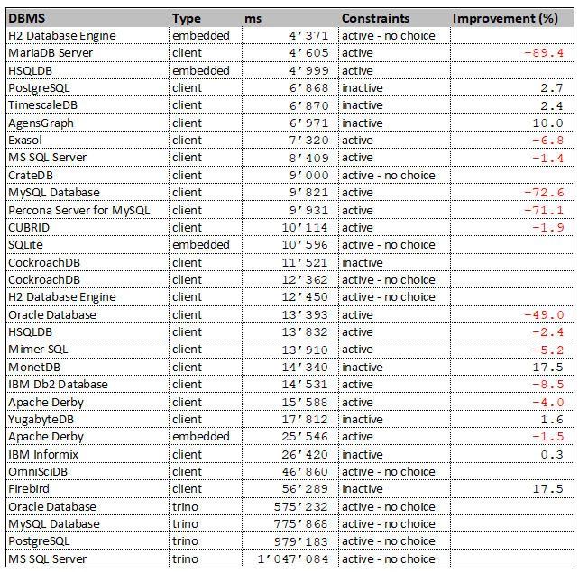

DBSeeder - Release Notes


Version 3.0.6
Release Date: 01.03.2022
System Requirements
- Operating system: any Java-enabled Linux, Mac or Windows variant
- Docker Desktop Community: 4.0.0 (e.g. from Docker for Windows release notes)
- Gradle Build Tool: 7 (e.g. from here)
- Java Development Kit 16 or 17, (e.g. from here)
optional:
- Eclipse IDE: 2021.12 (e.g. from Eclipse Download Page)
- an environment variable called
HOME_ECLIPSEthat points to the installation directory of Eclipse IDE, e.g.:C:\Software\eclipse\java-2021-12\eclipse
New Features
- Travis CI replaced by GitHub Actions
- Use of GitHub pages for user documentation
Modified Features
- CockroachDB: DBMS v21.2.65
- CrateDB: DBMS 4.7.0
- Exasol: DBMS 7.1.6 / JDBC 7.1.4
- Firebird: DBMS v4.0.1 / JDBC 4.0.4.java11
- H2 database Engine: DBMS 2.1.210 / JDBC 2.1.210
- IBM Db2 Database: JDBC 11.5.7.0
- IBM Informix: DBMS 14.10.FC7W1DE / JDBC 4.50.7
- MariaDB Server: JDBC 3.0.3
- Mimer SQL: JDBC 3.42.3
- MonetDB: DBMS Jan2022-SP1 / JDBC 3.2.jre8
- MySQL Database: DBMS 8.0.28 / JDBC 8.0.28
- OmniSciDB: DBMS v5.10.2 / JDBC 5.10.0
- Oracle Database: JDBC 21.4.0.0.1
- Percona Server for MySQL: DBMS 8.0.26-17
- PostgreSQL: DBMS 14.2 / JDBC 42.3.3
- SQL Server: DBMS 2019-CU15-ubuntu-20.04
- TimescaleDB: DBMS 2.6.0-pg14
- trino: DBMS 368 / JDBC 368
- YugabyteDB: DBMS 2.12.1.0-b41
Open Issues
Windows 10 Performance Snapshot
The finishing touch to the work on a new release is a test run with all databases under identical conditions on three different systems - Ubuntu 20.04 via VMware and WSL2, Windows 10.
The measured time includes the total time required for the DDL effort (database, schema, user, 5 database tables) and the DML effort (insertion of 7011 rows).
The hardware used includes an AMD Ryzen 9 5950X CPU with 128GB RAM.
The tests run exclusively on the computer in each case.
The detailed results can be found in the DBSeeder repository in the resources/statistics directory.
The following table shows the results of the Windows 10 run.
If the database can run with both activated and deactivated constraints (foreign, primary and unique key), the table shows the better value and in the column Improvement the relative value to the worse run.
For example, the MonetDB database is faster with inactive constraints by 17.5 % compared to the run with activated constraints.

DBMS- official DBMS nameType- client version, embedded version or via trinoms- total time of DDL and DML operations in millisecondsConstraints- DML operations with active or inactive constraints (foreign, primary and unique key)Improvment- improvement of total time if constraints are inactive
Detailed Open Issues
HSQLDB
- Issue: org.hsqldb.HsqlException: user lacks privilege or object not found: SYS_IDX_KXN_26_10100.
The problem only occurs with the "DROP CONSTRAINTS" functionality.
2022-02-28 08:13:28,758 [DatabaseSeeder.java] INFO tickerSymbolAnyCase='hsqldb_emb'
2022-02-28 08:13:28,758 [DatabaseSeeder.java] INFO Start HSQLDB [embedded]
2022-02-28 08:13:28,763 [AbstractDbmsSeeder.java] INFO tickerSymbolIntern =hsqldb
2022-02-28 08:13:28,771 [AbstractJdbcSeeder.java] INFO tickerSymbolExtern =hsqldb_emb
java.sql.SQLSyntaxErrorException: user lacks privilege or object not found: SYS_IDX_KXN_26_10100
at org.hsqldb.jdbc.JDBCUtil.sqlException(Unknown Source)
at org.hsqldb.jdbc.JDBCUtil.sqlException(Unknown Source)
at org.hsqldb.jdbc.JDBCStatement.fetchResult(Unknown Source)
at org.hsqldb.jdbc.JDBCStatement.execute(Unknown Source)
at ch.konnexions.db_seeder.jdbc.AbstractJdbcSeeder.executeSQLStmnts(AbstractJdbcSeeder.java:1367)
at ch.konnexions.db_seeder.jdbc.AbstractJdbcSeeder.dropTableConstraints(AbstractJdbcSeeder.java:1236)
at ch.konnexions.db_seeder.jdbc.AbstractJdbcSeeder.createData(AbstractJdbcSeeder.java:427)
at ch.konnexions.db_seeder.DatabaseSeeder.main(DatabaseSeeder.java:160)
Caused by: org.hsqldb.HsqlException: user lacks privilege or object not found: SYS_IDX_KXN_26_10100
at org.hsqldb.error.Error.error(Unknown Source)
at org.hsqldb.error.Error.error(Unknown Source)
at org.hsqldb.SchemaManager.getSchemaObject(Unknown Source)
at org.hsqldb.ParserDQL.readSchemaObjectName(Unknown Source)
at org.hsqldb.ParserDDL.compileAlterTableDropConstraint(Unknown Source)
at org.hsqldb.ParserDDL.compileAlterTable(Unknown Source)
at org.hsqldb.ParserDDL.compileAlter(Unknown Source)
at org.hsqldb.ParserCommand.compilePart(Unknown Source)
at org.hsqldb.ParserCommand.compileStatements(Unknown Source)
at org.hsqldb.Session.executeDirectStatement(Unknown Source)
at org.hsqldb.Session.execute(Unknown Source)
... 6 more
trino
- Issue: all connectors: absolutely unsatisfactory performance (see here).
VoltDB
- Issue: Java 16 not yet supported:
java.lang.NullPointerException: Cannot invoke "io.netty_voltpatches.NinjaKeySet.size()" because "this.m_ninjaSelectedKeys" is null
2021-09-02 03:39:41,112 [DatabaseSeeder.java] INFO tickerSymbolAnyCase='voltdb'
2021-09-02 03:39:41,112 [DatabaseSeeder.java] INFO Start VoltDB
2021-09-02 03:39:41,117 [AbstractDbmsSeeder.java] INFO tickerSymbolIntern =voltdb
2021-09-02 03:39:41,127 [AbstractJdbcSeeder.java] INFO tickerSymbolExtern =voltdb
java.lang.NullPointerException: Cannot invoke "io.netty_voltpatches.NinjaKeySet.size()" because "this.m_ninjaSelectedKeys" is null
at org.voltcore.network.VoltNetwork.optimizedInvokeCallbacks(VoltNetwork.java:478)
at org.voltcore.network.VoltNetwork.run(VoltNetwork.java:329)
at java.base/java.lang.Thread.run(Thread.java:831)
Sept. 02, 2021 3:39:41 AM org.voltcore.logging.VoltUtilLoggingLogger log
SEVERE: NULL : Throwable: java.lang.NullPointerException: Cannot invoke "io.netty_voltpatches.NinjaKeySet.size()" because "this.m_ninjaSelectedKeys" is null
java.lang.NullPointerException: Cannot invoke "io.netty_voltpatches.NinjaKeySet.size()" because "this.m_ninjaSelectedKeys" is null
at org.voltcore.network.VoltNetwork.optimizedInvokeCallbacks(VoltNetwork.java:478)
at org.voltcore.network.VoltNetwork.run(VoltNetwork.java:329)
at java.base/java.lang.Thread.run(Thread.java:831)
Sept. 02, 2021 3:39:41 AM org.voltcore.logging.VoltUtilLoggingLogger log
SEVERE: NULL : Throwable: java.lang.NullPointerException: Cannot invoke "io.netty_voltpatches.NinjaKeySet.size()" because "this.m_ninjaSelectedKeys" is null